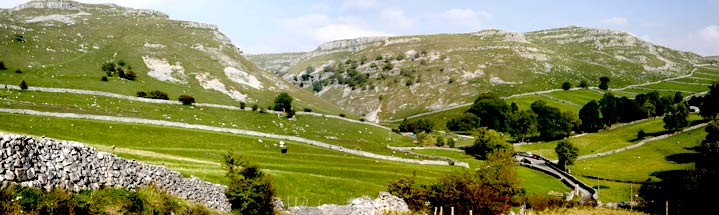

You may have found us by using the following keywords: Our Climate, Climate Change Partnership, Climate Change, Regional, Adaptation Sub-Group, Adaptation, Local Authorities, Strategy and Monitoring, Built Environment, Transport, Health Services, Business, Land Management, Citizen Engagement, Energy, Waste, Water, Carbon, Flood risk, Mitigation, Leadership, Low Carbon Products, Low Carbon Services, Zero Carbon, Integrated Regional Strategy, Yorkshire and Humber Strategy, Climate Change Act, Regional Adaptation Study, Climate Change Plan for Yorkshire and Humber, Climate UK, Regional Coordinator, Low Carbon Economy, Bio-mass, Carbon Capture, Microgeneration, Local Area Climate Change Network, YoHr Space, Climate Change Board, Impacts, Vulnerability, Opportunities, CO2, NI188, NI186, NI185, NI187, Temperature, Rainfall, Extreme weather